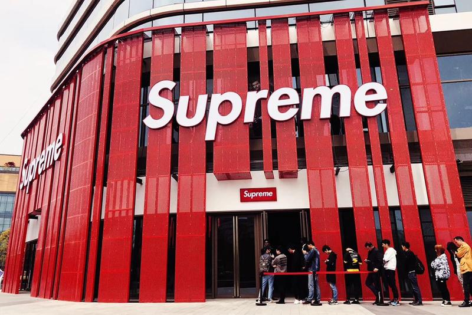

HIGHFASHN
Мода
Обувь
Взгляните на новый шанхайский магазин Supreme Italia
Еще один продуманный флагман для поддельного бренда.

Продолжая строить свой бизнес на подделке Supreme, Supreme Italia недавно открыла свой второй магазин в Шанхае.
На этот раз новый магазин выбирает оригинальный дизайн, сосредоточенный вокруг красно-белого синонимичного с реальным лейблом уличной одежды. Определяющими элементами локации является массивный «высший» знак, обрамленный освещающими вертикальными линиями снаружи, и скат, расположенный внутри. Образы магазина, которые пробились в интернете, быстро собрали отклики поклонников настоящего бренда.
Несмотря на публичное признание создания бутлегов, Supreme Italia открыто строит свой бизнес на идее, что «Supreme NYC не имеет разрешения на продажу и маркетинг в Китае, но Supreme Italia получило разрешение на продажу продукта и рынок в Азиатско-Тихоокеанском регионе (за исключением Япония) ». В недавнем интервью Джеймс Джеббиа высказал свою мысль о фальшивомонетчиках, сказав:« Идея легальных подделок - это полный фарс. Было бы грустно, если новое поколение думает, что это действительно законно. Мы не делаем тонны прессы, и мы довольно тихо. Эти ребята в полной мере используют это ».